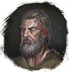

Обруч Переноса
Предметы / Ключи
Открыть в интерактивной вики →
| Вес | 0 |
|---|---|
| Цена | 0 |
Описание
Магический обруч, защищающий во время телепортации на корабль  Уторский Адмирал. Продает
Уторский Адмирал. Продает  Бедиса. Для использования отправляемся к
Бедиса. Для использования отправляемся к
Этот предмет нельзя продать.
Уторский Адмирал. Продает Бедиса. Для использования отправляемся к 
ХенгисЭтот предмет нельзя продать.
| Магический обруч, защищающий при телепортации на уторский корабль адмиральского класса. Предмет нельзя передать другим игрокам. |
Рецепт
Покупка: 100
Покупка: 200
Покупка: 300
Покупка: 200
Покупка: 300
Применение
|
Как добыть
Если в инвентаре 50 или больше Обручей переноса, получение и покупка следующих заблокированы. |